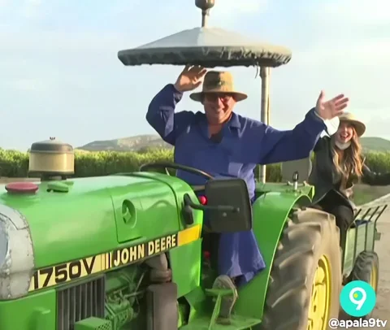

DO CAMPO À CIDADE COLHENDO OPORTUNIDADES
A transição da vida rural para a vida urbana, impulsionada pelos avanços tecnológicos,representa
um fenômeno marcante nas dinâmicas contemporâneas. Esse movimento não apenas reflete mudanças
individuais, mas também evidencia como a tecnologia pode ser uma canalisadora de oportunidade e tranformações sociais
Em primeiro lugar, é inegavel que os avanços tecnológicosm tem revolucionado as atividades agrícolas, tornando-as mais eficientes
e produtivas. A introdução de máquinas agrícolas modernas, sistemas de irrigação automatizados, sensores de monitoramento de colheitas
e técnicas de colheita e cultivo de preciao não apenas aumentaram a produtividade no campo, mas também reduziram a dependência de trabalhadores manual intensiva. Isso tem impactos significativos
na vida dos trabalhadores rurais, muitos dos quais observam na cidade a oportunidade de explorar novas carreiras relacionadas à tecnologia agrícola ou a outros setores impulsionados pela inovação.
Além disso, a conectividadedigital está diminuindo as barreiras geográficas entre campo e a cidade. A disseminaçãp da "internet" e das redes de comubicação móvel permite que agricultores em áreas remotas acessem informações
em tempo real sobre preços de mercado. técnicas agrícolas avançadas, e até mesmo oportunidades de capacitação e educação á distancia. Isso não apenas melhora a tomada de decisões no campo, mas também abre portas para
empreendimentos rurais concetados globalmente, que podem fornecer produtos de alta qualidade para mercados urbanos exigentes.
Em suma, a transição dao campo para a cidade com o auxílio dos avanços tecnológicos representa uma oportunidade única para transformar e melhorar a vida de milhões de pessoas ao redor do mundo.
